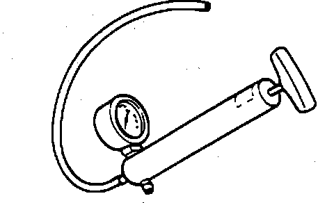

Vacuum Pump With Gauge
Vacuum Pump:

PURPOSE
1. Apply a vacuum to vacuum actuated components--an Exhaust Gas Recirculation (EGR) valve for example--to verify operation.
2. Test vacuum at vacuum actuated components.
3. Check engine operation as manifold vacuum to detect:
^ Obstruction of Exhaust System Air Flow
^ Sticking Valves
^ Broken Valve Springs
^ Low Compression
^ Ignition Timing Problems
^ Vacuum Leaks